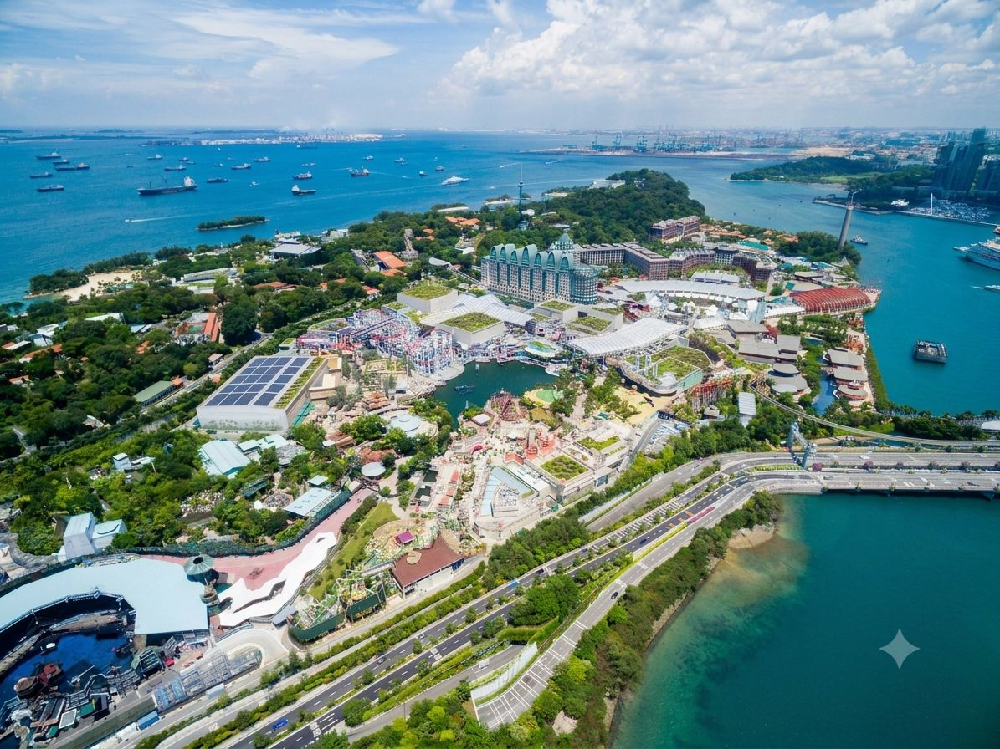

About Sentosa
Sentosa is a resort island located off the southern coast of Singapore, home to an array of themed attractions, beaches, resort hotels, and championship golf courses. Its name means "peace and tranquillity" in Malay, and today it is one of Singapore's most popular tourist destinations, accessible via the Sentosa Express monorail, cable car, boardwalk, or bus from HarbourFront on the mainland. Major draws on the island include Resorts World Sentosa, home to Universal Studios Singapore and Singapore's first casino, alongside beaches, spa retreats, and a yachting marina at Sentosa Cove.

History
The island was formerly known as Pulau Blakang Mati and served as a British military base during World War II. In 1970, the Singapore government renamed it Sentosa as part of a plan to transform it into a leisure destination, and the Sentosa Development Corporation was established in 1972 to oversee its development, backed by a S$124 million investment plan. A cable car system connecting the island to Mount Faber on the mainland opened in 1974, and further milestones followed over the decades, including the launch of Sentosa Cove in 2003 and the opening of Resorts World Sentosa in 2010.